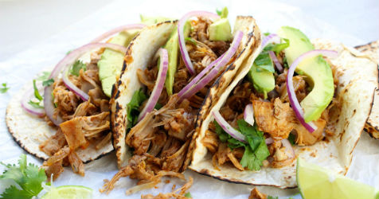

Tex-Mex Jackfruit Taocs

Ingredients:
Corn Tortillas
Vegetable Oil
3 Bell Peppers, sliced
Red Onion, Sliced
1 Package Tex-Mex Jackfruit
Toppings (all optional)
Cilantro
Avocado
Sour Cream (Vegan)
Lime Wedges
Red Onion Slices
+Recipe Box
Share on:
1.Heat the tortillas on a dry skillet set to medium heat, about 30 seconds per side. Keep the tortillas warm by wrapping in a clean dish towel or paper towel.
2. Heat a skillet to medium heat, and add enough oil to lightly coat the bottom.
3. Add the bell peppers and red onion and cook, stirring often, for about 3 minutes.
4. Add the Tex-Mex Jackfruit and mix the contents of the skillet until everything is coated in sauce.
5. Continue to cook until the vegetables achieve the desired texture and the jackfruit reaches the desired temperature, about 4-6 minutes.
6. Spoon the desired amount of Tex-Mex Jackfruit filling onto a tortilla.
7. Top with cilantro leaves, avocado, sour cream, etc. (optional).
8. Serve with lime wedges (optional).